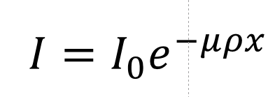
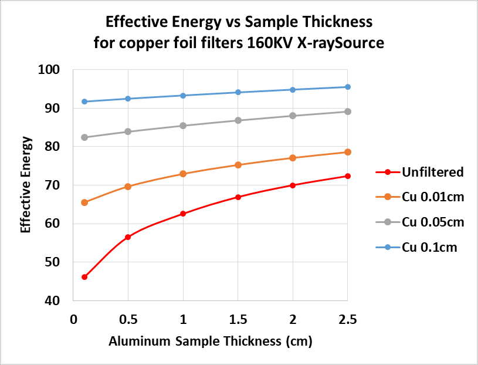

Schematic of a typical radiography/tomography
experimental setup
The above figure shows a schematic of a simple radiography or CT
scanner. The arrow widths indicate spectral width and the length
indicates intensity.
Beam hardening is the shifting of the broad spectrum of a
conventional x-ray source toward higher average (hard) energies as it
passes through a material. Lower energy (longer wavelength) X-rays
are preferentially attenuated leaving the higher energy, more
penetrating X-rays for detection. It is mostly evident in the
photoelectric energy range where the attenuation of materials changes
rapidly with photon energy. The plot below illustrates this energy
shift (plotted as wavelength for dramatic effect) caused by the beam
passing through different thicknesses of copper.
Source intensity distribution with
copper filters
When measuring attenuation of a specimen using a conventional
bremsstrahlung x-ray source, we first measure the incident beam
intensity "I0". Then we put a specimen in the beam
and repeat the measurement "I ". We know the thickness of the
specimen so we can calculate the linear attenuation μρ
using the equation.

With
μρ
in hand and if we know the the specimen's composition we can
look-up
the "
Effective
" x-ray energy of the incident x-ray beam.
Definition: The Effective Energy is the monochromatic x-ray energy that
will produce the same attenuation as that measured with a given
polychromatic x-ray energy distribution.
But the distribution is changing as it passes through the specimen! So
we try again with a thinner specimen and sure enough, we get a different
effective energy. The plot below shows the use of different thickness
copper filters to remove a portion of the low-energy (soft) x-rays
incident on different thickness aluminum specimens. Unfiltered(red), the
effective energy changes from about 45keV in the 0.01cm specimen to
72keV for the 2.5cm thick one. By removing the soft x-rays from the
incident beam with a 0.1cm copper filter the average energy shifts to
about 90keV and remains nearly constant for all thicknesses of of
aluminum.

Pre-hardening using filters
Why is Beam Hardening Important?
Beam Hardening results in an over-estimate of attenuation by
shorter paths through the specimen. It produces the well-known
cupping and streak artifacts in reconstructed tomographic images.
Cupping makes the image brighter at the thinner edges, streaks appear
as brighter regions between more x-ray absorbing higher atomic number
features in the specimen(streaks can also be caused by non-linear
detector response).
Cupping Artifact in a Simulated Sandstone
Calcite cement Z contrast is not sufficient to cause detectable
streaks.
What can be done to reduce Beam Hardening?
Apart from absorption edges, beam hardening is always present,
lower energy x-rays are more strongly absorbed. But we can reduce the
effect, hopefully below detection, by experimental technique and
post-processing.
Pre-harden the X-ray beam using a filter, usually a metal
foil, located at the X-ray source. This can result in a substantial
loss of x-ray intensity. If not already at maximum, the x-ray source
current can be increased to offset the loss. Occasionally the
accelerating potential of the X-ray source is increased to offset the
decreased intensity caused by the filter absorbance. This is usually
not a good idea. It raises the effective energy and lowers the sample
attenuation an may result in additional noise in reconstructed slices.
See the Scanner Setup
page for pre-hardening calculations.
Apply a correction to the observed attenuations so that a plot
of attenuation vs sample thickness becomes linear. The linearization
function is usually a polynomial that is determined, depending on the
information being sought, either by simply observing the quality of
the corrected images or by careful calibration. Linearization is most
successful when the sample is relatively homogeneous, i.e. when all
rays passing through the sample see about the same average
composition. See the Linearization page for more information. After
correction by linearization the reconstructed image linear
attenuations will be at a single effective energy. When samples are
not relatively homogeneous, more advanced methods beyond the current
scope of my plugins are required.